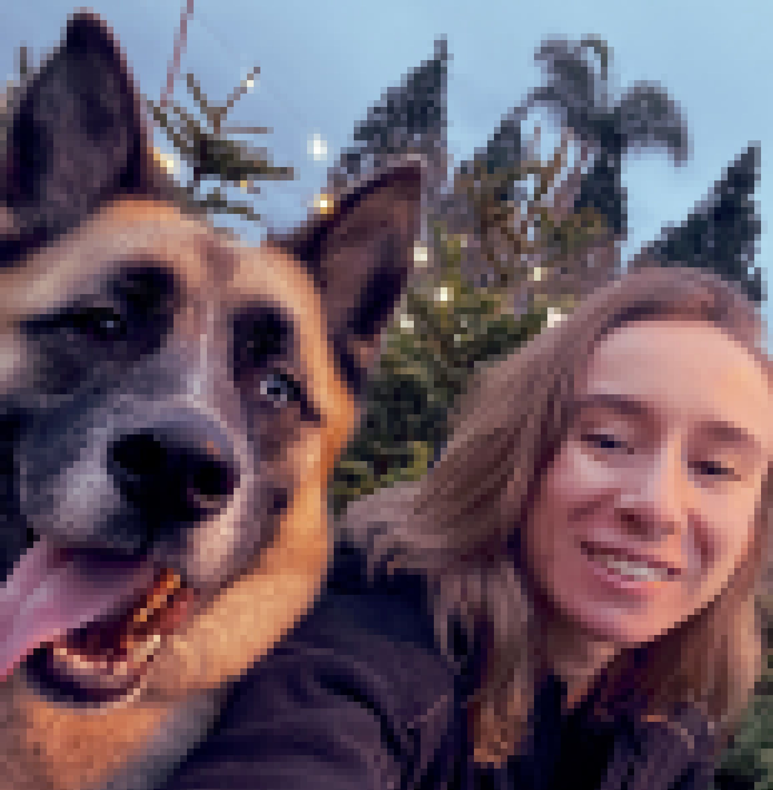

Those who know me know T.P. is a nickname for my dog Loki. Before he was adopted, he was a little trash puppy who was abandoned to fend for himself.
Not unlike T.P., I am a young woman with a goal: to better myself and my life. After working in a career full of destruction and heart break, I've decided instead to pursue inspiration, creativity, and vision.
Every day I'm working hard to improve my skills as a full-stack developer. This website is an ever-expanding portfolio of my work and I encourage you to browse!
While you're at it, think of Trash Puppy as a persona who motivates me to improve myself, my work, and my life.

"There's no dog in this whole world cuter than Loki!"